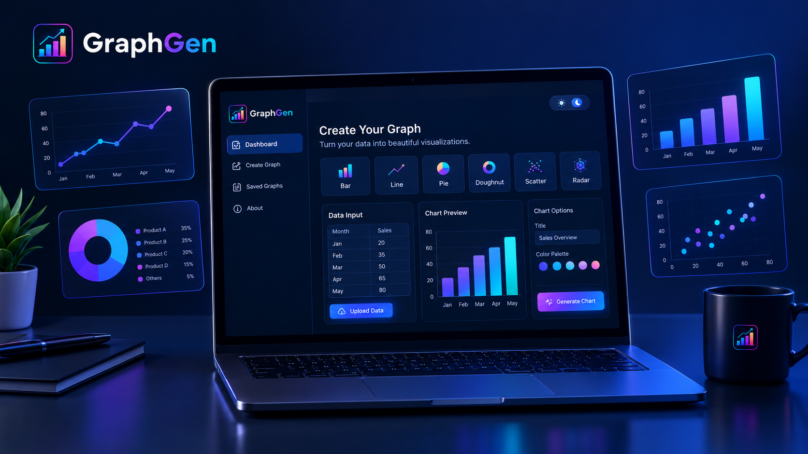
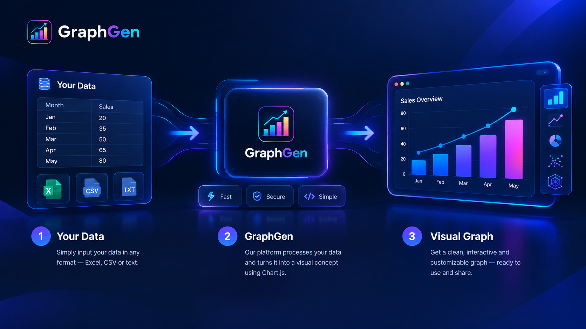
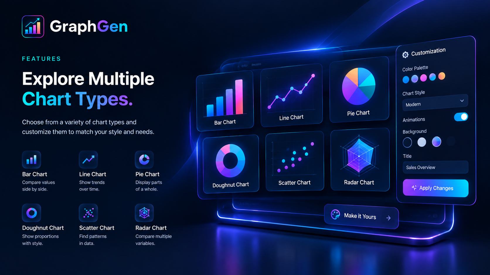
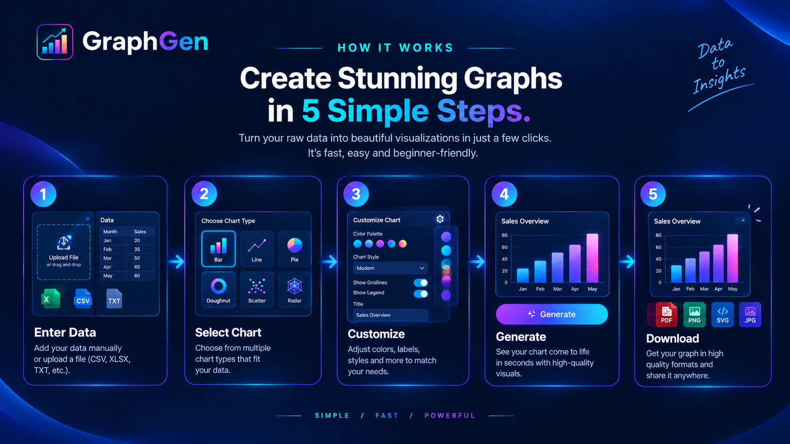
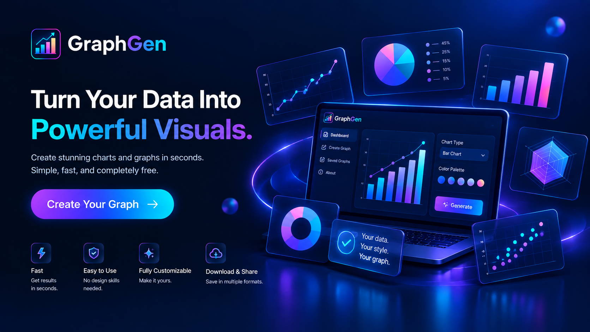

Multiple Graph Types
Create different visualizations including line, bar, pie, doughnut, radar, polar area, scatter and bubble charts.
GraphGen is an interactive graph generator built to turn raw data into clear, meaningful and visually engaging visualizations — without unnecessary complexity.


GraphGen is designed to make data visualization accessible and intuitive. Instead of dealing with complicated chart-building processes, users can provide their data, select a graph type and create a visualization within a few simple steps.
Whether you are working on a college project, analyzing information or simply exploring your data, GraphGen helps you present information in a way that is easier to understand.
Good visualization should not require a steep learning curve. GraphGen focuses on keeping the process simple while providing powerful visual results.
GraphGen combines different chart types, customization options and an intuitive workflow into one focused experience.

Create different visualizations including line, bar, pie, doughnut, radar, polar area, scatter and bubble charts.
Customize important chart details to create a visualization that fits your data and presentation.
Work with responsive and interactive visualizations that make your data easier to explore.
Keep your generated visualizations available for later use and download your charts when needed.
Creating a visualization with GraphGen follows a simple workflow designed to keep your focus on the data.

Provide the values and labels you want to visualize.
Select the chart type that best represents your data.
Adjust your graph and make the visualization your own.
Create your final visualization and download it for use.
GraphGen is not about adding unnecessary complexity. It is about making the path from information to visualization shorter.
A straightforward interface makes graph creation approachable even if you are new to data visualization.
GraphGen focuses on the core process of entering, visualizing and presenting your data.
Useful for students, personal projects, demonstrations and everyday data visualization tasks.
Stop looking at raw numbers. Give your data a visual story with GraphGen.
Create Your First Graph →